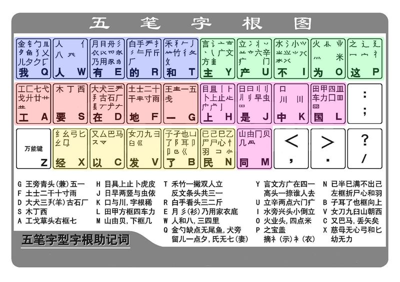

五笔字型输入法学习(aihafo整理，2021.1.21于济南)
第一篇 基础知识
字根助记键盘图及口决
五种笔划与130个基本字根
字根 是由若干笔划交叉连接而形成的相对不变的结构叫字根。图一所示

五笔字型中优选了130个基本字根，分五大区，每区又分五个键位。
一区∶横起笔类 分“王土大木工”五个位；
二区∶竖起笔类 分“目日口田山”五个位；
三区∶撇起笔类 分“禾白月人金”五个位；
四区∶捺起笔类 分“言立水火之”五个位；
五区∶折起笔类 分“已子女又纟”五个位；
（注：双引号中为键名字，共２５个）
五种笔划组成字根时，其间的关系可分为四种情况∶
(1) 单∶即五种笔划自身
(2) 散∶组成字根的笔划之间有一定间距，如三、八、心等
(3) 连∶组成字根的笔划之间是相连接的，可以是单笔与单笔相连，也可以是笔笔相连。如厂，人，尸，弓等
(4) 交∶组成字根的笔划是互相交叉的，如十，力，水，车等
汉字的三种字型
根据构成汉字的各字根之间的位置关系，可以把汉字分三种类型∶左右型，上下型，杂合型。图二所示。
1.一型──左右型汉字：如∶肚，胡，理，胆，拥，侧，别，谈等
2.二型──上下型汉字：如：字，节，旦，看，意，想，花等
3.三型（杂合）──外内型汉字和单体型汉字，如∶困，同，这，斗，头等
汉字的结构分析
基本字根本身在组成汉字时，按照它们之间位置关系也可以分为四种类型。
1.单：即基本字根本身就单独成为一个汉字，如∶口，木，山，田，马，寸等
2.散∶指构成汉字的基本字根之间可以保持一定距离，如∶吕，足，困，汉等
3.连∶指一个基本字根连一单笔划，如“丿”下连“目”即成为“自”，连的另一种情况所谓“带点结构”。
例∶勺，术，太。按规定，一个基本字根之前或之后的孤立点，一律视作是基本字根相连的关系。4.交∶指几个基本字根交叉套迭之后构成的汉字。如∶“农”是由“冖”，“申”是由“日丨”等。
汉字的末笔字型识别码（这是五笔字型中最难的地方）
对于拆不够四个字根的汉字，要在字根打完后，加上一个末笔字型识别码
识别码：末笔代号（区号）+字型代号（位号）组合而成。(见图一和图二)
注意∶ 1.键名字及一切成字字根都不用识别码。
2.如果一个字加了识别码后仍不足四码，则必须补空格。例1：柏：SRG+空格
分析：柏的第一个字根在S键上，第二字根在R键上，柏的末笔是横，左右结构的字。所以需要打横区的第一个键，也就是G键。但输入SRG后仍不足四码，则必须补空格。也就是SRG+空格
例2：芏：AFF+空格
分析：芏的第一个字根在A键上，第二字根在F键上，芏的末笔是横，上下结构的字，所以需要打横区的第二个键，也就是F键。但输入AFF后仍不足四码，则必须补空格。也就是AFF+空格
例3：冉：MFD+空格
分析：冉的第一个字根在M键上，第二字根在F键上，冉的末笔是横，杂合结构的字，所以需要打横区的第三个键，也就是D键。但输入MFD后仍不足四码，则必须补空格。也就是MFD+空格
例4：元：FQB+空格
分析：元的第一个字根在F键上，第二字根在Q键上，元的末笔是折，上下结构的字，所以需要打折区的第二个键，也就是B键。但输入FQB后仍不足四码，则必须补空格。也就是FQB+空格
例5：页：DMU+空格
分析：页的第一个字根在D键上，第二字根在M键上，页的末笔是捺，上下结构的字，所以需要打捺区的第二个键，也就是U键。但输入DMU后仍不足四码，则必须补空格。也就是DMU+空格
例6：杉：SET+空格
分析：杉的第一个字根在S键上，第二字根在E键上，页的末笔是撇，左右结构的字，所以需要打撇区的第一个键，也就是T键。但输入SET后仍不足四码，则必须补空格。也就是SET+空格万dnv空格 杏skf+空格 甘afd+空格 轧lnn+空格 卉faj+空格 孕ebf+空格
仓wbb+空格 丸vyi+空格 叉cyi+空格 弘xcy+空格 孔bnn+空格 凼ibk+空格
汉字的分原则
拆分原则可归纳为以下四个要点∶取大优先，兼顾直观，能连不交，能散不连
取大优先∶夷∶一弓人（11 55 34 GXW） 将∶丬夕寸（42 35 12 UQF） 章：立 早（不能拆作“立日十”）
兼顾直观∶自∶丿目 （31 21 THD） 舟∶丿舟（31 33 TEI）
能连不交∶天∶一大（不能拆作“二人”，因二者相交）于∶一十 （不能拆作“二│”，因二都相交）
能散不连∶午∶丿十 （都不是单笔画，应视作上下关系） 占∶卜口 （都不是单笔画，应视作上下关系）
第二篇 汉字的输入
一、键面字的输入
键面字：就是“五笔字根图”中能看到的汉字
1、
键名字的输入：把该字所在键连击四次就可以了。如∶王∶GGGG 立∶UUUU 山：MMMM
25个键名字：王 土大木工、目日口田山、禾白月人金、言立水火之、已子女又纟。
2、成字字根汉字输入。（除了一个键名字根外，还有一部分字根其本身也是一个汉字，称之为成字字根）
成字字根输入公式∶报户口＋首笔笔画＋次笔笔画＋末笔笔画 若只有两笔划，则以空格键结束。
例∶由∶25 21 51 11（MHNG） 十∶12 11 21（FGH） 丁：14 11 21（SGH）
二、键面上没有的汉字的输入（是指除键名字和成字字根字之外的字）
1、
正好四个字根的汉字：依次输入四个字根码即可。
副∶一 口 田刂（GKLJ） 给∶纟 人一 口 （XWGK） 照：日 刀 口 灬 （JVKO）
2、超过四个字根的汉字：取前三个字根码和最后一个字根码即可。
赣：立 早 攵 贝 （UJTM） 攀：木 Ⅹ Ⅹ 手（SQQR） 器：口 口 犬 口（KKDK）
3、不足四个字根的汉字：输入完字根码后，补打末笔字型识别码。（若仍不足四码则补空格）（见mqb+空格）
汉： 氵又 （ICY ） 灾：宀 火 （POU） 冗：冖 几（PMB） 宙： 宀 由（PMF） 章：立 早 （UJJ）
注：任何一种笔画的识别码，其左右结构的识别码在该区的１位键上，上下左右结构的识别码在该区的２位键上，杂合结构的识别码在该区的３位键上。
注意：对识别码的末笔，这里有二点规定，①如果是包围和半包围结构的汉字，取末笔字型识别码时，规定取被包围的那个字根的末笔。
国∶其末笔应取“丶”（即点），识别码为43(I) 远∶其末笔应取“乙”（即折），识别码为53(V)
②对于字根“刀、九、力、七”，虽然只有两笔，但一般人的笔顺却常有不同，为了保持一致和照顾直观，规定，凡是这四种字根当作“末”字根需要识别时，一律用向右下角伸得最远的笔划“折”来识别
如∶仇∶34 53 51 化∶34 55 51
三、词的输入
1、
双字词的输入：分别取每个汉字的前两个字根码，组成四码。
如：机器∶木几口口（SMKK） 汉字∶氵又宀子 （ICPB） 说明：讠冫日月（YUJE）
2、三字词的输入：取前两个汉字的第一码和第三个汉字的前两码，组成四码。
如：计算机∶讠竹木几 （YTSM） 科学家：禾 氵宀豕（TIPE） 共产党：廿立 小冖（AUIP）
3、四字词的输入： 分别取每汉字的第一码，组成四码。如∶
门庭若市∶门 广 艹 亠 （UYAY） 光明日报∶小日日扌（IJJR） 振兴中华：扌氵口亻（RIKW）
4、多字词的输入：取前三个汉字的第一码和最后一个汉字第一码，组成四码。如∶
汉字输入技术：氵宀车木（IPLS）
中华人民共和国∶口人人囗（KWWL）
中国人民解放军：口囗人冖（KLWP）
四、附一级简码。共２５个
一级简码是指输入该汉字对应的键和一个空格就可输出的汉字
一地在要工 上是中国同 和的有人我 主产不为这 民了发以经
ＧＦ ＤＳＡ ＨＪＫＬＭ ＴＲＥＷＱ ＹＵＩＯＰ ＮＢＶＣＸ
说明：
一级简码就是：敲一个字母键再敲一个空格键就能写屏的字。（一级简码有25个字）
二级简码就是：敲两个字母键再敲一个空格键就能写屏的字。（二级简码有理论上有625个汉字，去掉一些空字，实际上只有606个字）
三级简码就是敲三个字母键再敲一个空格键就能写屏的字。（三级简码有15625字）
没有四级简码，五笔字型中敲四个字母键就是全码。就直接写屏了。